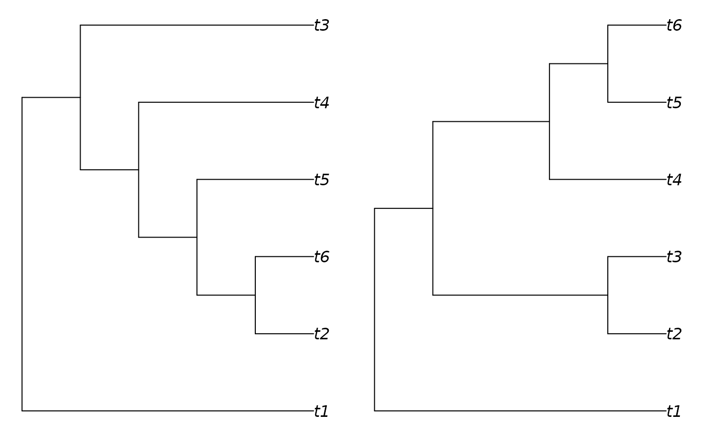
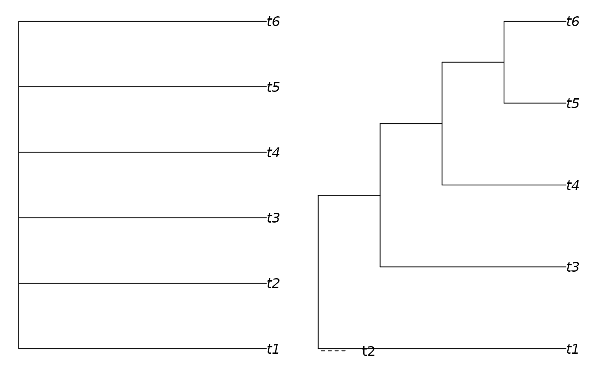

ConsensusWithout() displays a consensus plot with specified taxa excluded,
which can be a useful way to increase the resolution of a consensus tree
when a few wildcard taxa obscure a consistent set of relationships.
MarkMissing() adds missing taxa as loose leaves on the plot.
Usage
ConsensusWithout(trees, tip = character(0), ...)
# S3 method for class 'phylo'
ConsensusWithout(trees, tip = character(0), ...)
# S3 method for class 'multiPhylo'
ConsensusWithout(trees, tip = character(0), ...)
# S3 method for class 'list'
ConsensusWithout(trees, tip = character(0), ...)
MarkMissing(tip, position = "bottomleft", ...)Arguments
- trees
A list of phylogenetic trees, of class
multiPhyloorlist.- tip
A character vector specifying the names (or numbers) of tips to drop (using
ape::drop.tip()).- ...
Additional parameters to pass on to
ape::consensus()orlegend().- position
Where to plot the missing taxa. See
legend()for options.
Value
ConsensusWithout() returns a consensus tree (of class phylo)
without the excluded taxa.
MarkMissing() provides a null return, after plotting the specified
tips as a legend.
See also
Other tree manipulation:
AddTip(),
CollapseNode(),
DropTip(),
ImposeConstraint(),
KeptPaths(),
KeptVerts(),
LeafLabelInterchange(),
MakeTreeBinary(),
Renumber(),
RenumberTips(),
RenumberTree(),
RootTree(),
SortTree(),
Subtree(),
TipTimedTree(),
TrivialTree
Other tree properties:
Cherries(),
LongBranch(),
MatchEdges(),
NSplits(),
NTip(),
NodeNumbers(),
PathLengths(),
SplitsInBinaryTree(),
TipLabels(),
TreeIsRooted(),
Treeness()
Other consensus tree functions:
Consensus(),
RoguePlot()
Examples
oldPar <- par(mfrow = c(1, 2), mar = rep(0.5, 4))
# Two trees differing only in placement of tip 2:
trees <- as.phylo(c(0, 53), 6)
plot(trees[[1]])
plot(trees[[2]])

# Strict consensus (left panel) lacks resolution:
plot(ape::consensus(trees))
# But omitting tip two (right panel) reveals shared structure in common:
plot(ConsensusWithout(trees, "t2"))
MarkMissing("t2")

par(oldPar)